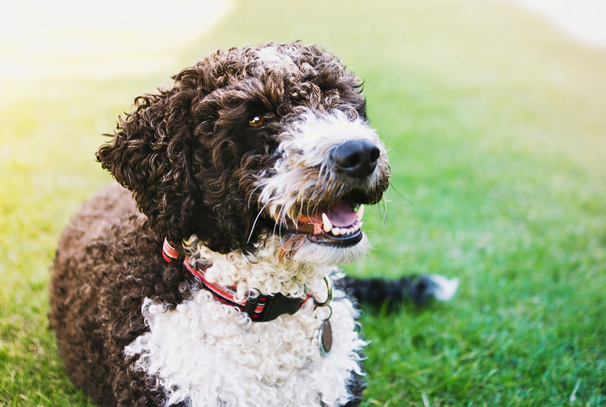
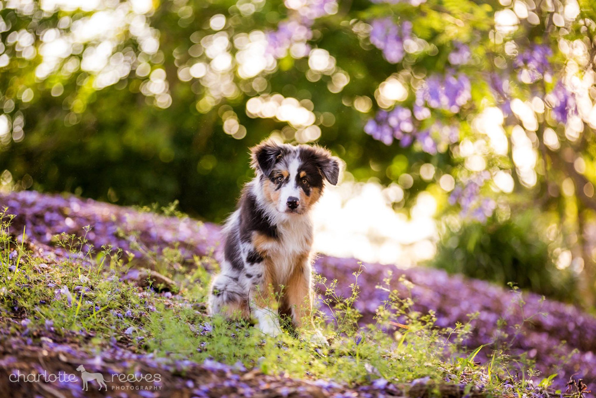
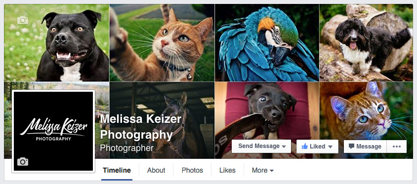

If you were to scan through my Flickr portfolio it’s easy to see that I’m fond of taking photos of animals. I often visit zoos, animal sanctuaries, the local park or wherever else I can find four-legged critters to shoot. I thought, “wouldn’t it be nice if I had the chance to do this more, and on top of that, be paid to do it?”
 A lovely Spanish Water Dog I met and photographed named Cassie
Well, that’s my plan. I took on a range of freelance photography jobs last year, ranging from restaurant shoots and portrait sessions to fashion shows and an autumn wedding. However I’d love to be commissioned to take photos of animals, including cherished pets whose owners want lovely portraits of them to display in their home.
Inspiration
This dream of mine is already being lived by a few of my favourite photographers. Charlotte Reeves and Kaylee Greer are professional dog photographers who spend their days meeting adorable dogs and shooting their portraits, and their work is incredible!
 I love the work of Brisbane photographer, Charlotte Reeves
I’m hoping I’ll be able to tap into the local market of owners who love their dogs, cats, horses or any of their other pets and want keepsakes in the form of gorgeous portraits they can hang on their wall, put in an album or post on Facebook.
Support me on Facebook
So, in an effort to market my services and share some of my work, I’ve created a Facebook page for my photography. You may notice that it’s populated with only my animal photography, as well as interesting links related to animals or photography. While I may share some of my other work from time to time, I’d like to keep it focused on animal photography and target the people who may be interested in having their pet’s portraits taken.
 I recently set up a Facebook page, likes are appreciated!
I’m hoping you can support me by liking or sharing my Facebook page, so I can spread the word about my services and hopefully get some four-legged clients booked in soon. 😃
Share on Twitter